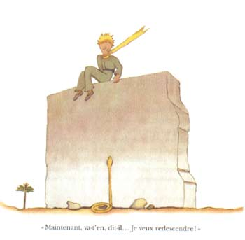
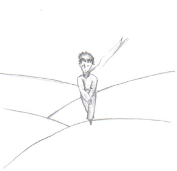
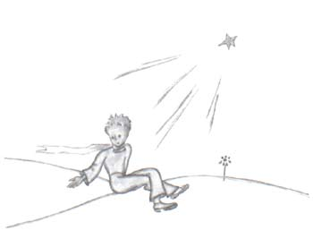
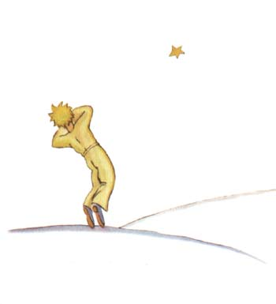

在井旁边有一堵残缺的石墙。第二天晚上我工作回来的时候，我远远地看见 了小王子耷拉着双腿坐在墙上。我听见他在说话：
“你怎么不记得了呢？”他说，“绝不是在这儿。”
大概还有另一个声音在回答他，因为他答着腔说道：
“没错，没错，日子是对的；但地点不是这里……”
我继续朝墙走去。我还是看不到，也听不见任何别人。可是小王子又回答道：
“……那当然。你会在沙上看到我的脚印是从什么地方开始的。你在那里等着 我就行了。今天夜里我去那里。”

我离墙约有二十米远，可我依然什么也没有看见。
小王子沉默了一会又说：
“你的毒液管用吗？你保证不会使我长时间地痛苦吗？”
我焦虑地赶上前去，但我仍然不明白是怎么回事。
“现在你去吧，我要下来了！……”小王子说。
于是，我也朝墙脚下看去，我吓了一跳。就在那里，一条黄蛇直起身子冲着 小王子。这种黄蛇半分钟就能结果你的性命。我一面赶紧掏口袋，拔出手枪，一 面跑过去。可是一听到我的脚步声，蛇却象一股干涸了的水柱一样，慢慢钻进沙 里去。它不慌不忙地在石头的缝隙中钻动着，发出轻轻的金属般的响声。
我到达墙边的时候，正好把我的这位小王子接在我的怀抱中。他的脸色雪一 样惨白。
“这是搞的什么名堂！你怎么竟然和蛇也谈起心来了！”我解开了他一直带 着的金黄色的围脖。我用水渍湿了他的太阳穴，让他喝了点水。这时，我什么也 不敢再问他。他严肃地看着我，用双臂搂着我的脖子。我感到他的心就象一只被 枪弹击中而濒于死亡的鸟的心脏一样在跳动着。他对我说：
“我很高兴，你找到了你的机器所缺少的东西。你不久就可以回家去了……”
“你怎么知道的？”
我正是来告诉他，在没有任何希望的情况下，我成功地完成了修理工作。
他不回答我的问题，却接着说道：
“我也一样，今天，要回家去了……”
然后，他忧伤地说：
“我回家要远得多……要难得多……”
我清楚地感到发生了某种不寻常的事。我把他当作小孩一样紧紧抱在怀里， 可是我感觉到他径直地向着一个无底深渊沉陷下去，我想法拉住他，却怎么也办 不到……
他的眼神很严肃，望着遥远的地方。
“我有你画的羊，羊的箱子和羊的嘴套子……”
他带着忧伤的神情微笑了。
我等了很长时间，才觉得他身子渐渐暖和起来。
“小家伙，你受惊了……”
他害怕了，这是无疑的！他却温柔地笑着说：
“今天晚上，我会怕得更厉害……”
我再度意识到要发生一件不可弥补的事。我觉得我的心一下子就凉了。这时 我才明白：一想到再也不能听到这笑声，我就不能忍受。这笑声对我来说，就好 象是沙漠中的甘泉一样。
“小家伙，我还想听你笑……”
但他对我说：
“到今天夜里，正好是一年了。我的星球将正好处于我去年降落的那个地方 的上空……”
“小家伙，这蛇的事，约会的事，还有星星，这全是一场噩梦吧？”
但他并不回答我的问题。他对我说：
“重要的事，是看不见的……”
“当然……”
“这就象花一样。如果你爱上了一朵生长在一颗星星上的花，那么夜间，你 看着天空就感到甜蜜愉快。所有的星星上都好象开着花。”
“当然……”
“这也就象水一样，由于那辘轳和绳子的缘故，你给我喝的井水好象音乐一 样……你记得吗？……这水非常好喝……”
“当然……”
“夜晚，你抬头望着星星，我的那颗太小了，我无法给你指出我的那颗星星 是在哪里。这样倒更好。你可以认为我的那颗星星就在这些星星之中。那么，所 有的星星，你都会喜欢看的……这些星星都将成为你的朋友。而且，我还要给你一 件礼物……”
他又笑了。
“啊！小家伙，小家伙，我喜欢听你这笑声！”
“这正好是我给你的礼物，……这就好象水那样。”
“你说的是什么？”
“人们眼里的星星并不都一样。对旅行的人来说，星星是向导。对别的人来 说，星星只是些小亮光。对另外一些学者来说，星星就是他们探讨的学问。对我 所遇见的那个实业家来说，星星是金钱。但是，所有这些星星都不会说话。你呢， 你的那些星星将是任何人都不曾有过的……”
“你说的是什么？”
“夜晚，当你望着天空的时候，既然我就住在其中一颗星星上，既然我在其 中一颗星星上笑着，那么对你来说，就好象所有的星星都在笑，那么你将看到的
星星就是会笑的星星！”
这时，他又笑了。
“那么，在你得到了安慰之后（人们总是会自我安慰的）你就会因为认识了 我而感到高兴。你将永远是我的朋友。你就会想要同我一起笑。有时，你会为了 快乐而不知不觉地打开窗户。你的朋友们会奇怪地看着你笑着仰望天空。那时， 你就可以对他们说：‘是的，星星总是引我欢笑！’他们会以为你发疯了。我的 恶作剧将使你难堪……”
这时，他又笑了。
“这就好象我并没有给你星星，而是给你一大堆会笑出声来的小铃铛……”
他仍然笑着。随后他变得严肃起来：
“今天夜里……你知道……不要来了。”
“我不离开你。”
“我将会象是很痛苦的样子……我有点象要死去似的。就是这么回事，你就别 来看这些了，没有必要。”
“我不离开你。”
可是他担心起来。
“我对你说这些……这也是因为蛇的缘故。别让它咬了你……蛇是很坏的，它随 意咬人……”
“我不离开你。”
这时，他似乎有点放心了：
“对了，它咬第二口的时候就没有毒液了……”

这天夜里，我没有看到他起程。他不声不响地跑了。当我终于赶上他的时候， 他坚定地快步走着。他只是对我说道：
“啊，你在这儿……”
于是他拉着我的手。但是他仍然很担心：
“你不该这样。你会难受的。我会象是死去的样子，但这不会是真的……”
我默默无言。
“你明白，路很远。我不能带着这付身躯走。它太重了。”
我依然沉默不语。
“但是，这就好象剥落的旧树皮一样。旧树皮，并没有什么可悲的。”
我还是沉默不语。
他有些泄气了。但是他又振作起来：
“这将是蛮好的，你知道。我也一定会看星星的。所有的星星都将是带有生 了锈的辘轳的井。所有的星星都会倒水给我喝……”
我还是沉默不语。
“这将是多么好玩啊！你将有五亿个铃铛，我将有五亿口水井……”
这时，他也沉默了，因为他在哭。
“就是这儿。让我自个儿走一步吧。”

他这时坐下来，因为他害怕了。他却仍然说道：
“你知道……我的花……我是要对她负责的！而她又是那么弱小！她又是那么天 真。她只有四根微不足道的刺，保护自己，抵抗外敌……”
我也坐了下来，因为我再也站立不住了。他说道：
“就是这些……全都说啦……”
他犹豫了一下，然后站起来。他迈出了一步。而我却动弹不得。

在他的脚踝子骨附近，一道黄光闪了一下。刹那间他一动也不动了。他没有 叫喊。他轻轻地象一棵树一样倒在地上，大概由于沙地的缘故，连一点响声都没 有。